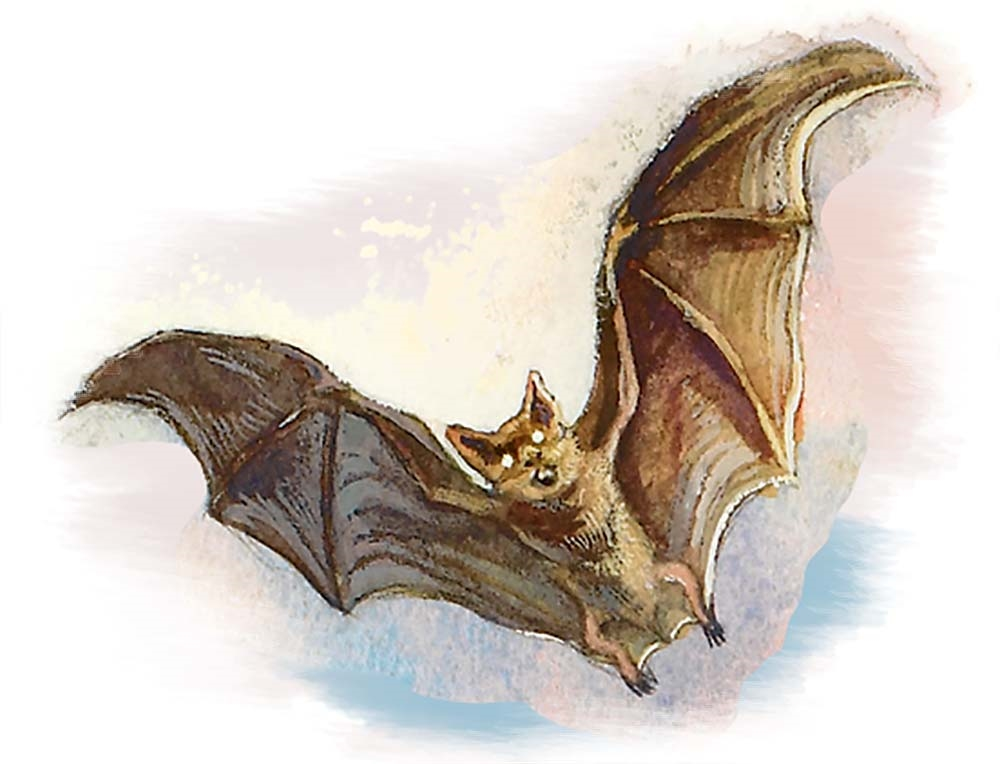

Fantasy Comprendium
Bestiario
“They breed quickly down there in the dark, but perhaps we can slay them even faster” ― Darkest Dungeon

Bestiario
Bestiario es el lugar donde se recopilaran las criaturas no humanoides que el grupo puede que se encuentre durante su aventura, la naturaleza y horrores in-naturales que se encontraran eventualmente

Murcielago